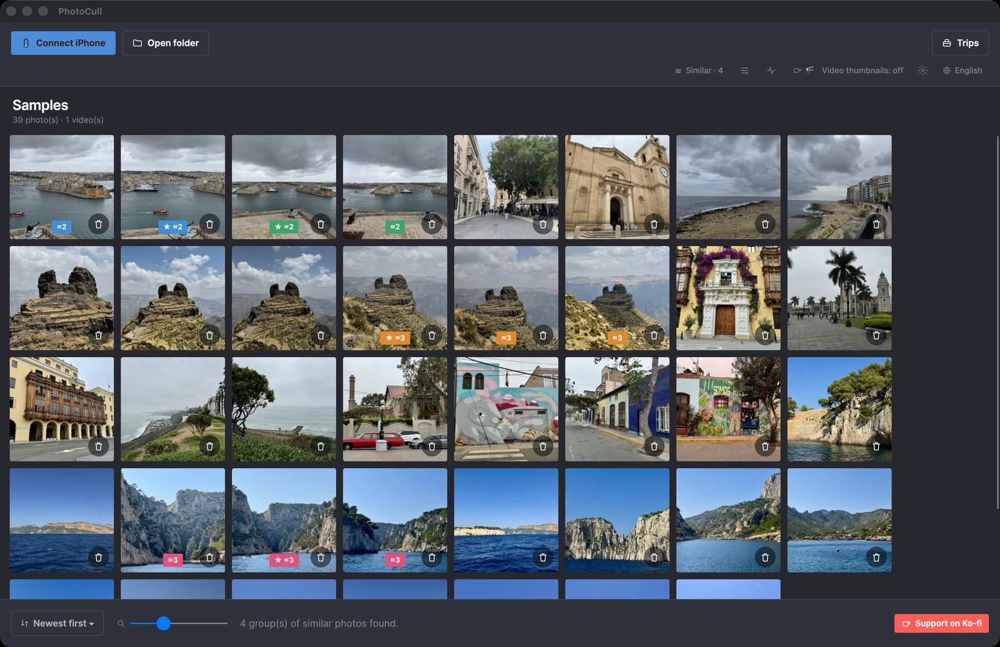
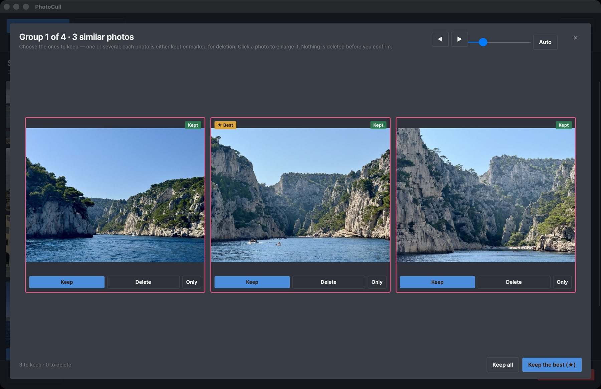
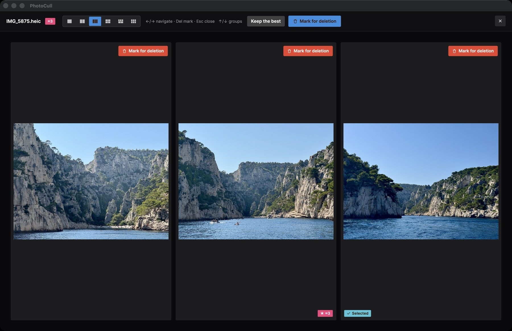
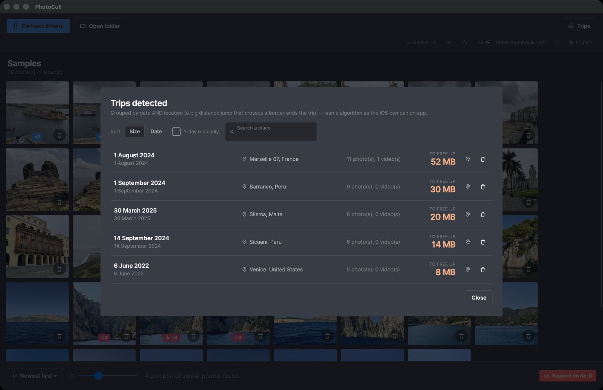

The real tool for sorting thousands of photos
PhotoCull is a full desktop application: it shows your entire iPhone camera roll grouped by trip, compares your photos side by side, and bulk-deletes what's no longer worth keeping — right from your Mac.
Free · macOS 11+ on Apple Silicon · signed and notarized by Apple

A look at the app



What the app does
The "Trips" view
Your entire photo library automatically grouped by trip (time AND location, just like the iOS app) — spot at a glance which trips take up the most space.
Side-by-side comparison
Show up to 6 similar photos at once to pick the best one — perfect for sorting through bursts and near-duplicates.
Safe bulk deletion
Mark hundreds of photos in a few clicks. The actual deletion goes through the companion app on your iPhone and “Recently Deleted” (30 days) — never an immediate permanent delete.
The size that counts
Sort and filter by single-day trip, by excluded place (home, work...), by size — the same filters as the iOS app, built for speed.
Direct connection to your iPhone
Plug in your iPhone via USB (or use simulation mode to try it out): PhotoCull reads your camera roll directly, with no iCloud and no server involved.
100% offline
No photo, no GPS location is ever sent anywhere. Place recognition runs entirely locally, with no account and no subscription.
Pairs with the TripSweep iOS app
Browsing, comparing and sorting your iPhone's photos works on its own: just plug it in via USB. To actually delete photos from the iPhone, you also need the free TripSweep iOS app, which applies the deletion on the phone through “Recently Deleted” and makes trip analysis near-instant. Folders on your Mac can be sorted without it.